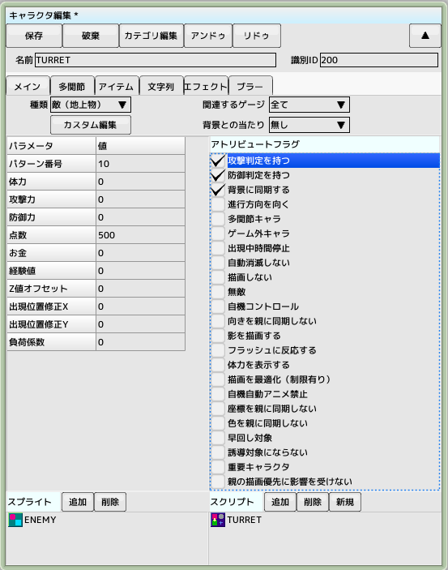
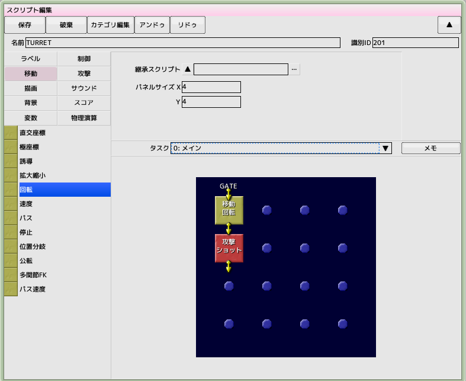
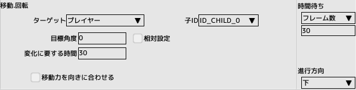
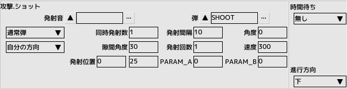

■元のページへ戻る
9.地上砲台を作成する
以前作成した敵は空中物でしたので今回は地上砲台を作成します
前回のチュートリアルで作成したプロジェクトファイルを開いておいてください

キャラクタとスクリプトの作成
地上砲台のキャラクタとスクリプトを作成し、右図のようにパラメータを設定します 名前は'TURRET'とします

スクリプトの作成
右図のように移動グループから回転パネルと攻撃グループからショットパネルを配置します
パネルの内容を編集する
プレイヤーの方向を向くように回転します
30フレームかけて回転するため時間待ちも30フレームにします

自機めがけて敵弾'SHOOT'を発射します

■ページ上部へ戻る
 ■元のページへ戻る
■元のページへ戻る